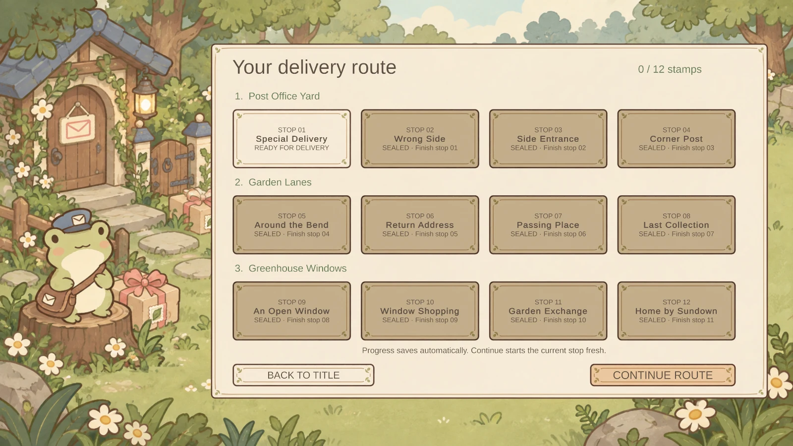

Swap Courier
A little frog, a special parcel, a change of place. Walk, push, and trade places with the parcel along a clear row or column. Deliver it to the doorstep, then find your own way home.

The game
Twelve compact puzzles turn one simple exchange into a game about positioning, staging, and leaving yourself a route out. Three chapters run from the Post Office Yard through Garden Lanes to Greenhouse Windows. Each room has two optional hints and a small thank-you from its recipient, and a stamp book lets you replay any delivery to beat your record. There are no timers or lives, and undo is unlimited.
How I made it
I came up with the concept and shaped the puzzle progression, controls, interface and garden presentation. I worked on the swapping and delivery systems, level layouts, saved progress, hints and audio. A small grid model drives movement, pushing, sightline swaps and undo. Progress and best records save locally, and the music, ambience and effects are synthesized in the game.
I used OpenAI Codex for implementation and testing help, and GPT Images for the original artwork. The game also uses the course’s EventBus and Unity’s TextMeshPro. Full credits are in the download.

Controls
- ← ↑ → ↓ or WASD
- Walk and push
- Space
- Swap places with the parcel; continue after a delivery
- Z or Backspace
- Undo
- R
- Restart the delivery
- H
- Show a hint, then a stronger one
- Esc
- Pause
Unzip, then open Windows/SwapCourier.exe (keep the files beside it together) or Mac/SwapCourier.app. Choose Start Delivery, bring the parcel to D, then walk the frog to EXIT. The Mac build is included but I haven’t been able to test it on a Mac.
Metroid, with a grappling hook
A team project from the same course: a Unity recreation of classic Metroid, plus a custom level built around a grappling hook you can attach, swing on, reel in and let go of mid-jump. I worked on gameplay programming and enemy behavior, player animation and sound, the title screen and the grappling mechanic’s integration, and helped test, connect the two levels and prepare the builds.
Download Metroid Windows + Mac ZIP, 84.4 MiB
- ← → or A D
- Move; ↑ to aim up
- Z
- Jump (hold to jump higher)
- X
- Fire; in grapple mode, hold to attach
- C
- Toggle grapple mode, once collected
- 4
- Switch between the classic and custom levels
Non-commercial student coursework. Metroid and its original artwork and music are © Nintendo. Sprites include course-provided assets and rips from The Spriters Resource.